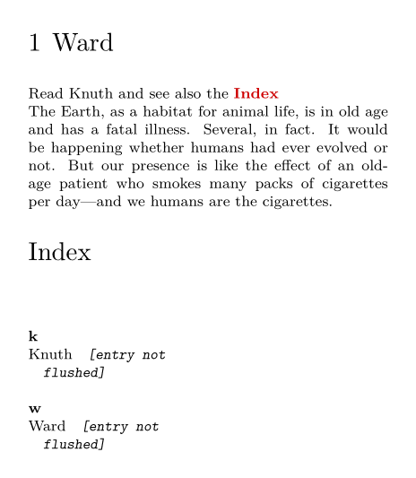
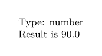
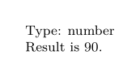

CLD (Context Lua Document) is the environment which lets you interact with TeX from inside Lua code. For more informations on this see the manual cld-mkiv.pdf, which is in [ConTeXt-StandAlone]/tex/texmf-context/doc/context/documents/general/manuals/cld-mkiv.pdf inside your ConTeXt directory.
Macro arguments (parameters)
Now if one needs to pass arguments from Lua to a macro command defined in ConTeXt, one has several possibilities.
First, if \mycommand is defined on the TeX end and takes one parameter, as in \mycommand{Myvariable}, then in Lua one can say context.mycommand("Myvariable").
The same applies to all the commands which take one or more parameters, provided that in their definition no specific delimiters is used. If \mycommand takes two arguments, then saying context.mycommand("Myfirstargument","Mysecondargument") in the Lua end, results in \mycommand{Myfirstargument}{Mysecondargument} on the TeX end.
Next, for commands which use specific delimiters, such as the \MyGoTo command defined below, then one has to use the construction context.MyGoTo({"Myfirstargument"},{"Mysecondargument"}).
Finally another construction (which works also for the above cases) which is there more specifically for some Lua reserved words (such as goto, end, if, present also as TeX commands) is to use the construction context["goto"]("some argument",{"ref:somewhere"}) in order to obtain \goto{some argument}[ref:somewhere].
All this being said, it is better to give some examples below (try the code by putting and removing the Lua comment signs --)
-
\setuppapersize[A6][A6] \setupinteraction[state=start] \def\MyGoTo[#1][#2]{\goto{#1}[#2]} \define[2]\YourGoTo{\goto{#1}[#2]} \startTEXpage[offset=5mm] \startchapter[title={Ward},reference={ch:ward}] \startluacode context.index("Knuth") -- context.index("Ward") context["index"]("Ward") context("Read Knuth and see also the ") local s,t = "Index","ref:index" -- context.MyGoTo({s},{t}) context["goto"]("Index",{"ref:index"}) -- context["goto"](s,{t}) -- context.YourGoTo("Index","ref:index") -- context.YourGoTo(s,t) -- context.goto("Index",{"ref:index"}) -- this does not work because goto is a reserved word in Lua \stopluacode \input ward.tex \stopchapter \starttitle[title={Index}] \startluacode context.pagereference({"ref:index"}) \stopluacode \placeindex \stoptitle \stopTEXpage
- 
Variables
For setting variables command\setvariable is used. One can retrieve the value with \getvariable.
From TeX to Lua
Setting variable on TeX end retrieving it at Lua side:
-
\startTEXpage[offset=5mm] \setvariable{Namespace}{Key}{30} \startluacode local value = tokens.getters.macro(tokens.getters.macro("??variables") .. "Namespace:Key") value = 3*value context("Type: " .. type(value)) context.par() context("Result is " .. value) \stopluacode \stopTEXpage
- 
From Lua to TeX
Setting variable in Lua and retrieving it at TeX side:
-
\startTEXpage[offset=5mm] \startluacode local value = 30 value = 3 * value context("Type: " .. type(value)) context.par() context.setvariable("Namespace", "Key", value) \stopluacode Result is \getvariable{Namespace}{Key}. \stopTEXpage
- 